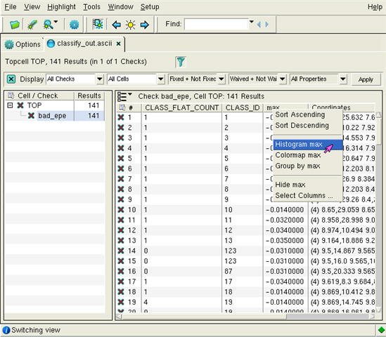
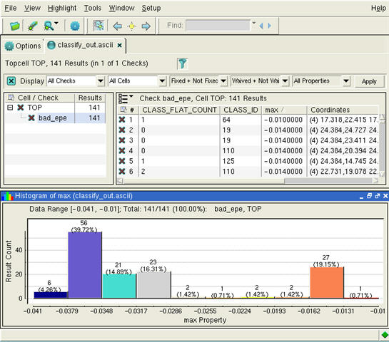
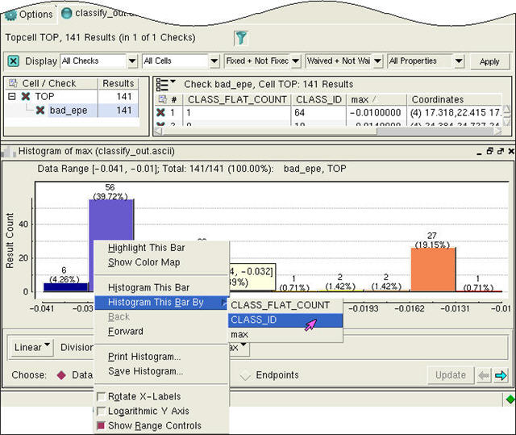
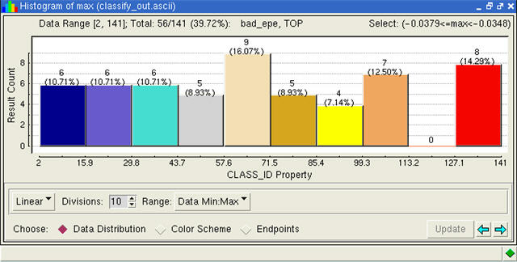

Histograms graphically
display the frequency of specific data values. In the context of
a Calibre OPCverify results database, this is the frequency of properties
on a derived layer resulting from a specific operation. If multiple
properties were generated, each property is attached to each instance
of the error on the derived layer.
Procedure
- Select a rule by clicking
on its name in the Calibre RVE viewer.
- Right-click one of the properties
at the top of its column, and select Histogram propertyname (as
shown in Figure 1).
Figure 1. Invoking the Histogram
Pane
- When the Histograms pane appears
at the bottom of the window, it shows the data ranges for the selected
property (Figure 2).
Figure 2. Histogram for a Property
Displayed
Right-click inside the Histogram
pane and select Show Range Controls from
the popup menu.
Custom range sizes can
be set by changing the Data:Min:Max dropdown to Custom Range and
typing a new range in the field, or by switching the Choose radio
button group from Data Distribution to Endpoints and
using the slider arrows.
Custom bin sizes can be
set to refilter the histogram as follows:
Switch
the selector from Linear to Custom.
In
the text field that appears, enter two or more new custom bin ranges.
Click Update to
redraw the histogram with the new changes.
- For rule results that have
multiple properties, you can see a histogram of a single column for
the values of a secondary property.
- Right-click one of the histogram
bars (Figure 3).
- In the context menu that appears,
select Histogram This Bar By.
Figure 3. Invoking a Secondary
Histogram
The histogram is replaced by
the secondary histogram plot (Figure 4). You can use the browse arrow buttons
in the lower right hand corner of the window to switch back to an earlier
histogram plot.
Figure 4. Secondary Histogram
(Example)
Tip You can
further select any bar in this secondary histogram and view a histogram
of another property for that results bar in a tertiary histogram
plot, repeating step 4 for as long as you have additional properties
of interest.